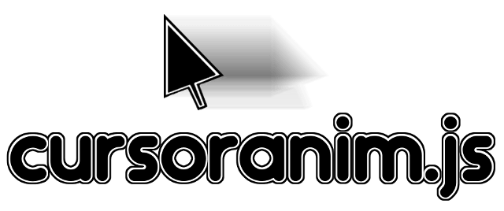

CursorAnim.js

What is it ?
It's a Javascript module that allows you to make quick and fluid animations with the cursor on your website. For example, you can easily move the cursor toward a button, click on it, then move the cursor to a position, wait an amount of time, drag and drop some items (with jQuery UI Draggable).
Example page
You can see an example of some animations on the following example page : http://tekrop.github.io/cursoranim/demo.html
Dependencies
- jQuery by jQuery Foundation : https://jquery.com/download/ ==> Used for jQuery plugins and for the animate command.
- Pause by tobia : http://tobia.github.io/Pause/ ==> Not used yet, will implement pause and resume for the animation thanks to this plugin.
- jQuery Simulate by jQuery Foundation : https://github.com/jquery/jquery-simulate/ ==> Used to simulate "drag" and "drop" events properly.
- jQuery UI by jQuery Foundation : http://jqueryui.com/download/ ==> Used for the drag and drop functionnality, and for the easing option of the mouse movement.
- Async.js by Caolan McMahon : https://github.com/caolan/async ==> Used to process the events for the animation in an asynchronous way, one by one.
- typed.js by Matt Boldt : https://github.com/mattboldt/typed.js ==> Used for dynamic typing in input and textarea
How does it work ?
Thanks to jQuery and some useful librairies and jQuery plugins, it hides the cursor of the user and replaces it by an image (that you can provide, the default one is for Windows). Then, using JSON data that you provide, it will do actions on the web page you are on.
Where can I use it ?
It's under MIT license, so you can use and modify it for every project you want (professional or personal), as long as you let the original copyright text in the file :)
How can I use it ?
If you want to use it quickly, it's very simple ! You just have to initialize the plugin, either by providing some options and data or just data, and then you can launch the animation ! Please read the following sections for the format of the data you should provide and how to launch an animation :)
Data format and provided functions
Here is an example covering all the current functions :
[
{
"action": "move",
"options": {
"selector": "#someDiv",
"easing": "easeInOutQuad",
"duration": 1000
}
},
{
"action": "drag"
},
{
"action": "move",
"options": {
"position": {
"x": 100,
"y": 200
}
}
},
{
"action": "drop"
},
{
"action": "move",
"options": {
"selector": ".class:first"
}
},
{
"action": "wait",
"options": {
"duration": 500
}
},
{
"action": "move",
"options": {
"selector": "#inputtext"
}
},
{
"action": "click"
},
{
"action": "type",
"options": {
"strings": ["super string", "super string 2"]
}
}
]
-
move: move the cursor toward a position (x,y) or an object targetted with CSS selector. If you move the cursor toward a position, it will automatically detect the element under the cursor, if you want to do a click just after for example. Options :-
selector(mandatory if you don't provide position) : CSS selector -
position(mandatory if you don't provide selector) : position object {x,y} -
easing(optional) : custom easing for this movement. If not provided, the defaultEasing value will be taken instead. See Easing Guide for a list of easings. -
duration(optional) : custom duration for this movement in milliseconds. If not provided, the defaultDuration value will be taken instead.
-
-
click: click on the object under the cursor. There is no option for this action. -
drag: drag the object under the cursor. To make it work, the object must be a jQuery UI Draggable object (see jQuery UI documentation about Draggable). There is no option for this action. -
drop: drop the current dragged object under the cursor. To make it work, the object under the cursor must be a jQuery UI Droppable object (see jQuery UI documentation about Droppable). There is not option for this action. -
wait: wait a certain amount of time without doing anything. Options :-
duration(optional) : duration of the waiting in milliseconds. If not provided, the defaultDuration value will be taken instead.
-
-
type: type a text into a text input or textarea. Using typed.js, the text is written dynamically. For the options, i'm using typed.js options, here are the ones you can use :-
strings(mandatory) : array of strings to type in the text box. If you just want to type one text, just give one string in the array. With typed.js, if you provide several strings, it will write the first string, then erase it dynamically, then write the second one, etc... -
typeSpeed(optional) : typing speed (default : 0) -
startDelay(optional) : time before typing starts in ms (default : 0) -
backSpeed(optional) : backspacing speed (default : 0) -
backDelay(optional) : time before backspacing in ms (default : 500)
-
Initialize with options
CursorAnim.setOptions({
data: "data/data.json",
cursor: "img/cursor.gif",
defaultDuration: 1000,
defaultEasing: "easeInOutQuad"
});
data : data for the animation. It should be in the format described in the previous section. You can either put it in a JSON file, or just give a string with the data in JSON format, or even directly the JSON object. By default, there is no data.
cursor : path of a custom cursor image if you don't want to use the default one. In the future, you will be able to pass a string with image data directly (very soon). By default, it's a Windows basic cursor.
defaultDuration : default duration for all movement animations. By default, it's 1000 ms.
defaultEasing : default easing for all movement animations, see Easing Guide for more details. By default, it's "easeInOutCubic".
Initialize with data
To initialize the data, or even change the data after an animation, you can just use CursorAnim.load(data);.
As I said in the previous section, the data can be in a JSON file, in a string containing JSON data or in a JSON object directly.
Launch the animation
To launch an animation, assuming you provided some data, just run CursorAnim.start();
Feedback and comments
Feel free to contact me if you found a bug, have a request or want to propose an improvement, on my mail adress (tekrop@gmail.com). You can also make pull requests as well for improvements or tickets for bugs :)